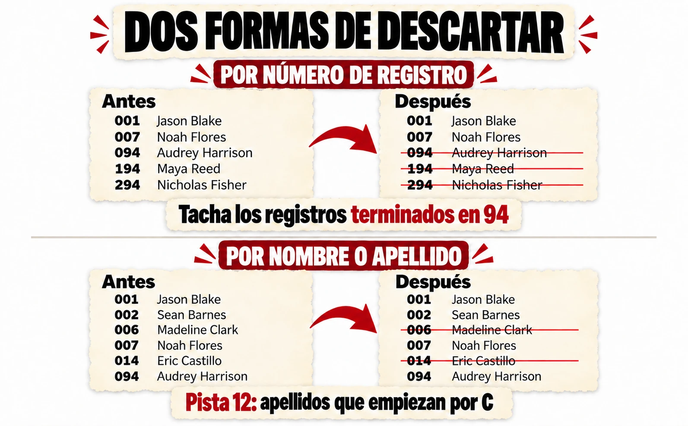
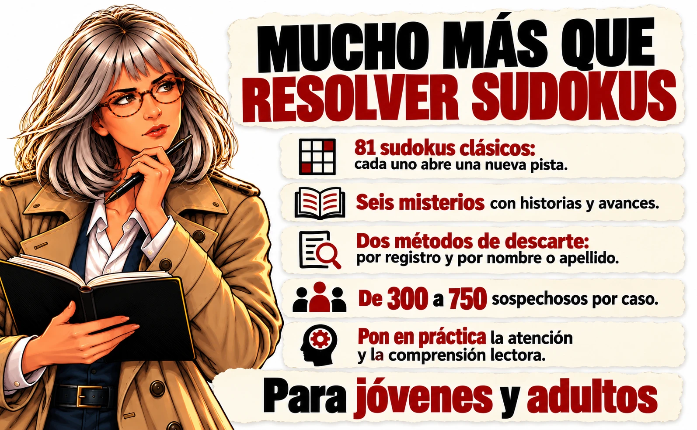
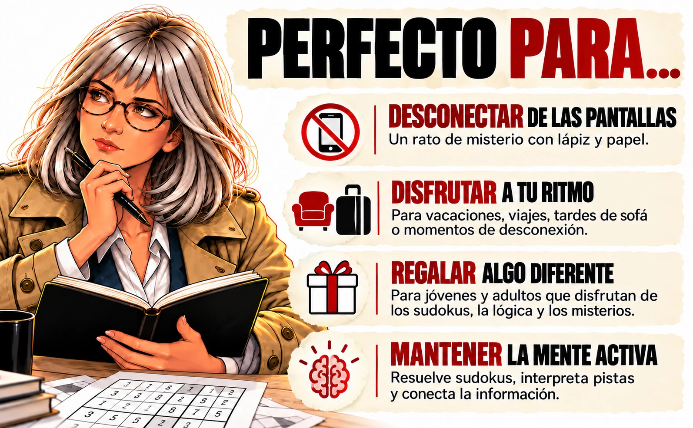

Un sudoku es
solo el principio.
Resuelve sudokus. Interpreta las pistas. Tacha sospechosos hasta descubrir quién queda.
Seis misterios para jóvenes y adultos que disfrutan investigando con lápiz y papel.
¿Quién queda? · Álex Valmer · Próximamente en Amazon
 6 CASOS
6 CASOS81 SUDOKUS
La investigación
empieza aquí.
Prueba un minicaso
Un sobre, treinta invitados y una felicitación desaparecida. Descubre la mecánica con esta prueba reducida en tu navegador.
Abrir el minicaso →02 /Abre el libro
Descubre qué encontrarás entre sus páginas y cómo se convierten las cifras en pistas.
Ver el expediente →03 /Aprende a investigar
Resuelve, extrae y descarta. Tres pasos para seguir el rastro hasta el final.
Así se juega →Cada cifra abre
una nueva pista.
01. Resuelve
Completa el sudoku y busca las casillas indicadas.
02. Extrae
Usa las cifras para obtener una pista numérica o encontrar una pista textual.
03. Descarta
Tacha los registros que encajan con la instrucción. Sigue hasta descubrir quién queda.

¿Quién queda?
Sudokus de investigación y misterio
Mara Grant sigue los hechos. Tú te encargas de las cifras y los descartes. Seis investigaciones independientes y cientos de posibilidades en cada caso.
170 páginas · Interior en blanco y negro
Álex Valmer · Tinta Despierta Ediciones
Próximamente en Amazon
Mientras tanto, prueba un caso

Antes de abrir el caso.
¿Qué es ¿Quién queda??
Un libro de sudokus de investigación y misterio. Los sudokus proporcionan cifras que se convierten en pistas para descartar sospechosos.
¿Para quién está pensado?
Para jóvenes y adultos que disfrutan de los sudokus, la lógica y el misterio. Puedes avanzar a tu ritmo, con lápiz y papel.
¿Qué incluye el libro?
Seis casos, 81 sudokus de 9 × 9 y entre 300 y 750 sospechosos por caso. Algunos casos tienen dos responsables.
¿Cómo funcionan los niveles?
Los niveles corresponden al número de sospechosos de cada caso.
¿Las soluciones están incluidas?
Sí, el libro incluye las soluciones en su apartado final.
¿Puedo probarlo antes?
Sí. El minicaso «El sobre de Navidad» se puede jugar gratis en esta web, sin introducir tu correo.
¿Dónde puedo comprarlo?
Se venderá en Amazon. Cuando esté publicado, encontrarás aquí el enlace directo. La compra, el pago y el envío se gestionarán en Amazon.
¿Cómo consigo el caso extra y los paneles?
Escanea el QR del interior del libro. Te llevará a la página para solicitar el caso extra y los paneles para imprimir. Recibir novedades es opcional.
¿Te queda alguna duda? Escríbenos a hola@tintadespierta.es.